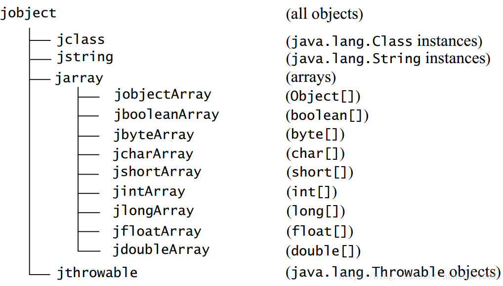

目录视图
目录视图 摘要视图
摘要视图 订阅
订阅版权声明：本文为博主原创文章，未经博主允许不得转载。
转载请注明出处：【huachao1001的专栏：http://blog.csdn.net/huachao1001/article/details/53992258】
这篇文章是直接从《The Java™ Native Interface Programmer’s Guide and Specification》中整理，可以前往http://docs.oracle.com/javase/7/docs/technotes/guides/jni/spec/jniTOC.html中查阅。本文只是作为参考用，并不涉及到深层次的技术。主要是为了后面学习过程中能快速查阅，花半分钟浏览一下即可。
1. JNI类型映射
1.1 基本类型
| Java Language Type | Native Type | Description |
|---|---|---|
| boolean | jboolean | unsigned 8 bits |
| byte | jbyte | signed 8 bits |
| char | jchar | unsigned 16 bits |
| short | jshort | signed 16 bits |
| int | jint | signed 32 bits |
| long | jlong | signed 64 bits |
| float | jfloat | 32 bits |
| double | jdouble | 64 bits |
1.2 引用类型映射

1.3 jvalue类型
jvalue类型为联合体union类型，它的定义如下：
typedef union jvalue {
jboolean z;
jbyte b;
jchar c;
jshort s;
jint i;
jlong j;
jfloat f;
jdouble d;
jobject l;
} jvalue; - 1
- 2
- 3
- 4
- 5
- 6
- 7
- 8
- 9
- 10
- 11

- 1
- 2
- 3
- 4
- 5
- 6
- 7
- 8
- 9
- 10
- 11
2. 描述符
JNI中使用C语言中的字符串来表示类的名称（class name）、域（field）、方法名以及域和方法描述，这些字符串都是UTF-8编码格式。
2.1 类描述符
类描述符用于描述类或接口名，比如描述java.lang.String类，使用java/lang/String来表示。对于数组类型，则通过[前缀来描述，比如一维数组类型int[]，则使用[I表示；二维数组int[][] 则使用[[I表示；甚至三维数组double[][][]，则用[[[D表示。
2.2 域描述符（Field descriptors ）
八种基本类型对应的域描述符如下：
| Field Descriptor | Java Language Type |
|---|---|
| Z | boolean |
| B | byte |
| C | char |
| S | short |
| I | int |
| J | long |
| F | float |
| D | double |
引用类型的域描述符以字符L开头，再连接引用类型对应的类描述符，最后以分号;结尾。数组类型则是先以[开头，再按照域描述符规则组成，例如：
| Field Descriptor | Java Language Type |
|---|---|
"Ljava/lang/String;" |
String |
"[I" |
int[] |
"[Ljava/lang/Object;" |
Object[] |
2.3 方法描述符（Method descriptors）
方法描述符是描述一个方法（或者说函数），主要描述方法的参数和返回类型，都是通过域描述符进行描述，方法描述符的构成为(形参对应的域描述符)返回类型对应域描述符。并且各个描述符之间没有空格和逗号或者是其他类型的间隔符号。字符V用于表示返回类型为void，而构造函数使用V表示他们的返回类型并且使用<init>作为名字，下表为简单示例：
| Method Descriptor | Java Language Type |
|---|---|
"()Ljava/lang/String;" |
String f(); |
"(ILjava/lang/Class;)J" |
long f(int i, Class c); |
`"([B)V" |
String(byte[] bytes); |
3. 宏定义
3.1 JNIEXPORT 与JNICALL
JNIEXPORT 和 JNICALL 都是宏定义，用于指定JNI函数和本地方法实现之间的调用和链接规则。必须将JNIEXPORT放在函数的返回类型之前，将JNICALL放在函数名称与返回类型之间。例如：
JNIEXPORT jint JNICALL Java_pkg_Cls_f(JNIEnv *env, jobject this);- 1
- 1
上面为C语言对Java中pkg.Cls.f函数的具体实现对应的函数原型。定义指向Java_pkg_Cls_f函数的指针变量可以如下：
jint (JNICALL *f_ptr)(JNIEnv *env, jobject this);- 1
- 1
3.2 JNI_FALSE与JNI_TRUE
JNI_FALSEand JNI_TRUE 是定义jboolean类型的两个常量 :
#define JNI_FALSE 0
#define JNI_TRUE 1- 1
- 2
- 1
- 2
3.3JNI_OK与 JNI_ERR
JNI_OK表示JNI函数成功返回， JNI_ERR有时用于表示错误。
#define JNI_OK 0
#define JNI_ERR (-1)- 1
- 2
- 1
- 2
并非所有的错误情况都是使用JNI_ERR，因为JNI并不指定错误码集合，而是返回JNI_OK表示JNI函数成功返回，返回负数表示函数执行失败。
3.4 JNI_COMMIT与JNI_ABORT
JNI_COMMIT与JNI_ABORT两个常量被用于函数中，释放本地拷贝的基本类型数组。JNI_COMMIT 强制要求本地数组数据拷贝至JVM中对应的数组，JNI_ABORT则释放本地数组占用的内存空间，并且不作为新返回数据拷贝至JVM中对应的数组。
#define JNI_COMMIT 1
#define JNI_ABORT 2 - 1
- 2
- 1
- 2
- 顶
- 0
- 踩
- 0
我的同类文章
- •IntelliJ IDEA平台下JNI编程（四）—本地C代码访问JAVA对象2017-03-22
- •IntelliJ IDEA平台下JNI编程（一）—HelloWorld篇2016-12-30
- •AndroidStudio插件开发（进阶篇之Editor）2016-12-26
- •AndroidStudio插件开发（Hello World篇）2016-12-24
- •双亲委派模型与自定义类加载器2016-08-24
- •IntelliJ IDEA平台下JNI编程（三）—字符串、数组2017-01-13
- •打造酷炫AndroidStudio插件2016-12-27
- •AndroidStudio插件开发（进阶篇之Action机制）2016-12-26
- •Android校招复习资料整理2016-11-14
- •2017年秋季校招面经2016-11-09


暂无评论